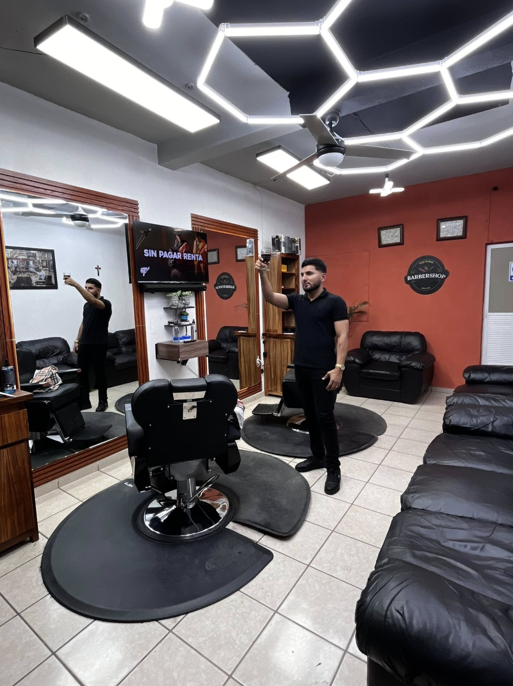
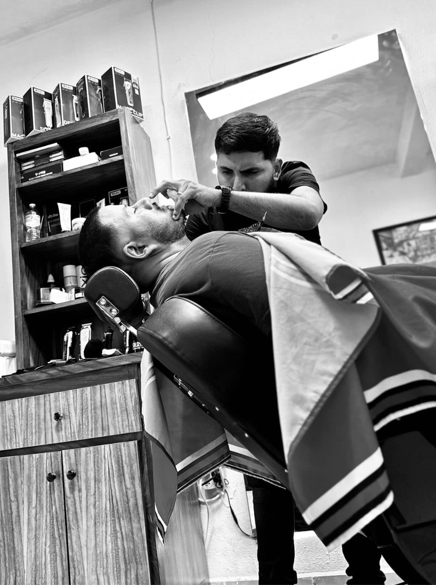
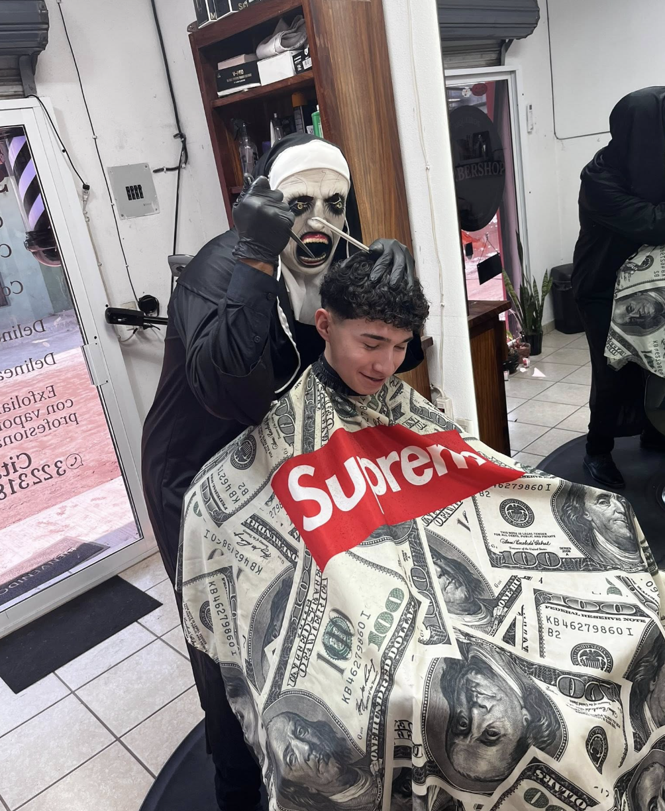
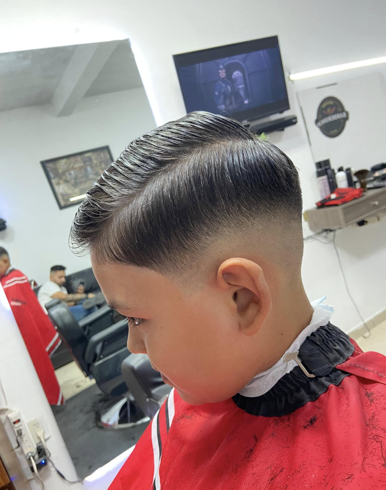
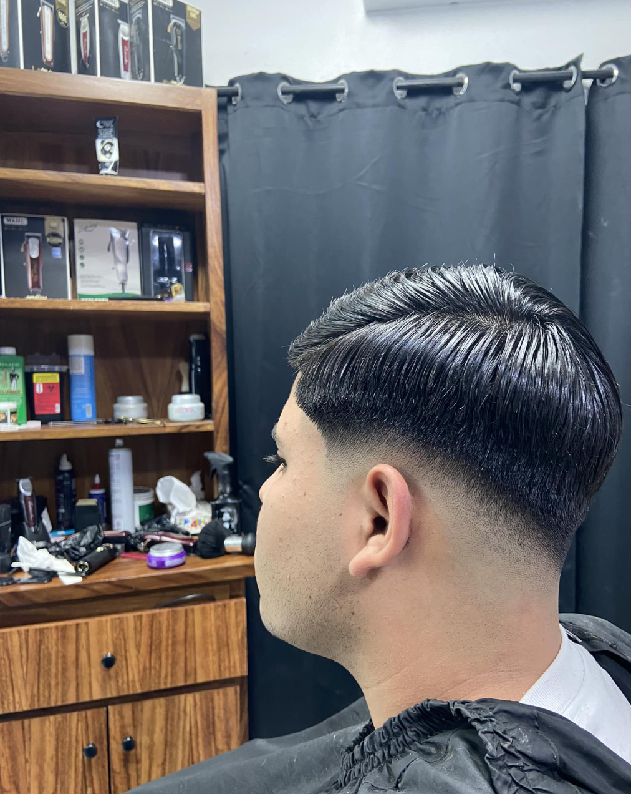
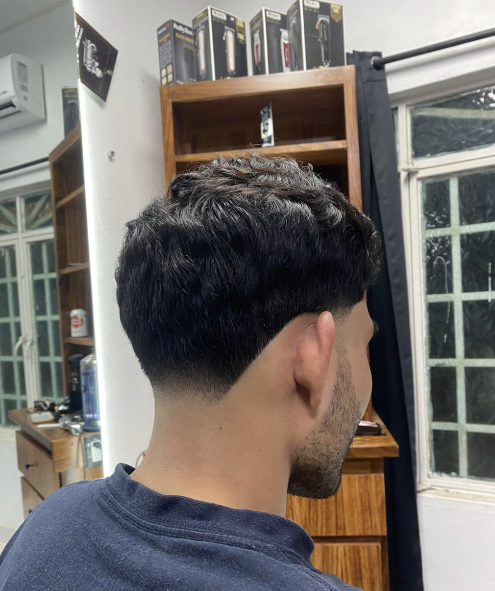
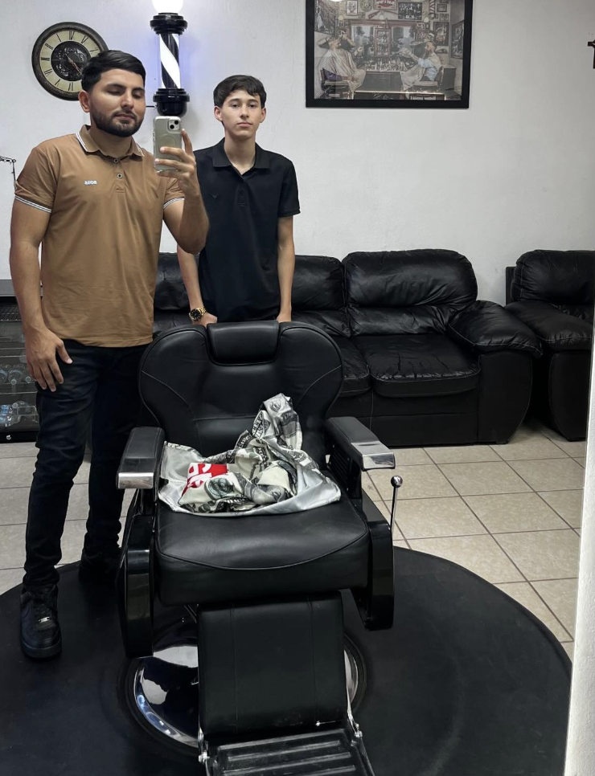

San José del Valle, Nayarit
Estilo, precisión y tradición barbera

Quiénes Somos
En Siqueiros Barber Shop transformamos tu look con técnica, estilo y dedicación. Ubicados en el corazón de San José del Valle, somos el destino favorito para los hombres que cuidan su imagen.
Nuestros barberos están en constante capacitación para ofrecerte los cortes más modernos y a tu medida.
Portfolio
Cada corte es una obra de arte. Aquí algunos de nuestros trabajos más recientes.





Reserva en Línea
Elige tu servicio
Selecciona fecha y hora
Ingresa tus datos de contacto
¡Listo! Te confirmamos por WhatsApp
El Talento Detrás del Estilo
Profesionales apasionados por el arte barbero, siempre listos para darte el mejor look.

San José del Valle, Nayarit
Google Reviews
"El mejor barbero de San José del Valle. Me hizo un skin fade increíble, quedó perfecto de principio a fin. El ambiente del lugar es muy padre y el trato es excelente. Definitivamente es mi barbería de cabecera."
Google Maps"Excelente servicio y muy buenos precios para la calidad que ofrecen. Pedí el Edgar cut con drop fade y quedé fascinado. Muy recomendable para los que buscan estilo y precisión en sus cortes."
Google Maps"Llevé a mi hijo por primera vez y quedó muy contento. El barbero fue muy paciente y el corte quedó exactamente como pedimos. El niño salió feliz y yo también. Regresaremos sin duda."
Google Maps"Pedí el corte con barba y diseño y quedé sorprendido con el resultado. Las líneas quedaron perfectas, la barba bien definida y el fade impecable. Sin duda los mejores en la zona."
Google Maps"Llevo años viniendo y nunca me han decepcionado. Siempre atentos, siempre puntual y el corte siempre queda bien. Son de lo mejor de Nayarit. Gracias Siqueiros por tanto talento."
Google Maps"Vine especialmente desde Puerto Vallarta porque me habían recomendado y valió cada kilómetro. El skin fade quedó de 10, las líneas perfectas y el trato increíble. Ya sé dónde cortarme el pelo."
Google Maps